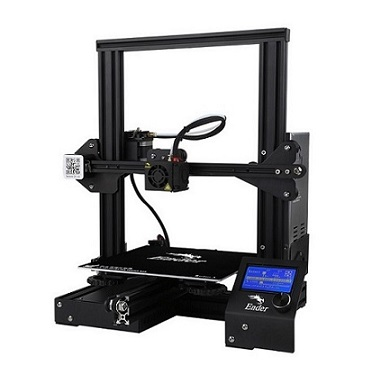

About
The Creality Ender 3 is taking over, this highly popular printer is the choice of the masses and we can see why. The ender 3 follows in the footsteps of the CR10 series with a sturdy cross-bar gantry frame to ensure a steady print, the only difference is the size and the price! The Creality Ender series is a highly supported printer with an abundance of information and modifications provided by the printing community.
Specifications
| Specs | Value |
|---|---|
| Nozzle Diameter | 0.4mm |
| Nozzle Type | MK8 |
| Print area | 220 x 220 x 250 mm |
| Heated-Bed Max Temperature | 110°C |
| Hot-End Max Temperature | 260°C |
| Print Speed (Stable) | 50mm/s |
| Print Speed (Max) | 70mm/s |
| Layer Thickness | 50-350 μm |
| Filament Diameter | 1.75mm |
| Extruder Style | Bowden |
| Power Supply | 12V 360W |
| Printer Footprint | 440 x 410 x 465 mm |
User Guide
For Cura settings for your Ender 3 check out the video below!
For suggested upgrades and modifications check out this informative guide by ALL3DP! 20 Must have mods for Ender 3